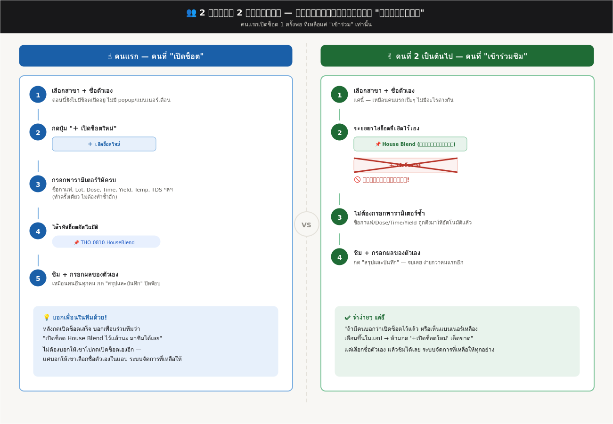

ข้อมูลช็อต
Other — ต่างสาขา
— ถ้ามีผู้ชิมต่างสาขาร่วมด้วย —
รหัสช็อต
⚠️ มีช็อตเปิดอยู่แล้วสำหรับสาขานี้
ถ้าจะชิมช็อตเดียวกัน ให้เลือกจาก dropdown ด้านล่าง ห้ามกด "เปิดช็อตใหม่" ซ้ำ ไม่งั้นหน้าทีมจะไม่เห็นว่าชิมร่วมกัน
＋ เปิดช็อตใหม่
🔄
— เลือกช็อต หรือเปิดช็อตใหม่ —
✏️ TDS
แก้ไข TDS (%) ของช็อตที่เลือกอยู่
บันทึก
📌 มีช็อตเปิดอยู่ — เลือกช็อตที่จะชิม
แตะเลือกช็อตที่ตรงกับกาแฟที่คุณจะชิม เพื่อให้หน้าทีมเห็นว่าชิมร่วมกัน
ปิด / เลือกเองทีหลัง
Taste Balance
Acidity
Intensity ℹ️ เกณฑ์
1 แทบไม่มีรสเปรี้ยว · 2 เปรี้ยวอ่อนๆ · 3 เปรี้ยวกลาง สมดุล · 4 เปรี้ยวเด่นชัด สดใส · 5 เปรี้ยวจัดจ้าน โดดเด่นมาก
Medium
Positive
Bright Balanced Crisp Vibrant
Negative
Dull Flat Sour/Unripe Muted Sharp Semi-ripe fruit
Sweetness
Intensity ℹ️ เกณฑ์
1 แทบไม่หวาน · 2 หวานอ่อน · 3 หวานกลาง · 4 หวานเด่นชัด · 5 หวานจัด โดดเด่นมาก
Medium
Positive
Brown Sugar Caramel Honey Vanilla Molasses Maple Syrup Overall Sweet
Bitterness
Intensity ℹ️ เกณฑ์
1 แทบไม่ขม · 2 ขมอ่อน · 3 ขมกลาง พอดี · 4 ขมเด่นชัด · 5 ขมจัด ค้างคอ
Medium
Positive
Chocolatey Dark Chocolate Balanced
Negative
Harsh Ashy Medicine
Aftertaste
Length
Short
Long
1 2 3 4 5
Medium
Positive
Clean Pleasant Sweetness Bitter Sweet Lingering
Negative
Unpleasant Astringent Bitterness Dryness Fades fast
Aftertaste Flavor — รสที่ค้างอยู่หลังกลืนคือรสอะไร
Fruity
Floral
Nutty
Sugary
Spice
Roasted
Taste Balance — Overall Score
6 Extraordinary
5 Excellent
4 Very Good
3 Good
2 Average
1 Acceptable
0 Unacceptable
Tactile
Mouthfeel
Weight (Intensity) ℹ️ เกณฑ์
1 บางเบามาก (watery) · 2 บาง · 3 กลาง (medium body) · 4 หนักแน่น (full) · 5 หนักมาก ข้นเหมือนน้ำเชื่อม
Medium
Texture — Positive
Silky Velvety Smooth Round Syrupy Creamy Rich
Texture — Negative
Gritty Watery Rough Chalky Thin
Tactile — Overall Score
6 Extraordinary
5 Excellent
4 Very Good
3 Good
2 Average
1 Acceptable
0 Unacceptable
Flavor Note
เลือก flavor category ที่รับรู้ได้ — ใช้สำหรับ calibration scoring
🍍 Fruity
Tropical
Pineapple
Mango
Passion Fruit
Papaya
Lychee
Stone Fruit
Peach
Plum
Apricot
Cherry
Nectarine
Berry
Blackberry
Raspberry
Blueberry
Strawberry
Cranberry
Citrus
Dried Fruit
Raisin
Dried Plum
Dried Apricot
Fig
Date
🌸 Floral
Jasmine
Rose
Chamomile
Bergamot
🍫 Nutty / Chocolate
Almond
Hazelnut
Walnut
Macadamia
Pistachio
Peanut
Roasted Nut
Dark Chocolate
Milk Chocolate
White Chocolate
Cocoa
Cocoa Nib
Mocha
🍯 Sugary
Caramel
Honey
Brown Sugar
Vanilla
Molasses
🌿 Spice / Herbal
Cinnamon
Clove
Ginger
Lemongrass
🌰 Roasted / Earthy
Tobacco
Cedar
Dark Roast
Earthy
Flavor Note (อิสระ)
สรุปและบันทึก
ล้างฟอร์ม
สรุปทุกสาขา
ทั้งหมด
7 วันล่าสุด
30 วันล่าสุด
สถานะ Calibration ตามสาขา
ล่าสุดที่แต่ละสาขาบันทึกผลชิม (ไม่ขึ้นกับตัวกรองช่วงวันด้านบน)
Inter-rater: ช็อตที่ชิมร่วมกัน
ช็อตที่มีผู้ชิม ≥2 คน — เทียบความสอดคล้อง
30 รายการล่าสุด
⬇ Export ทั้งหมดเป็น CSV
🖨️ พิมพ์รายงาน / Export PDF
ภาพรวมทีม — แยกตามสาขา
กดสาขาเพื่อดูตารางพนักงานทั้งหมด พร้อมระดับ และ attribute ที่อ่อน
ระดับ 3 Advanced ต่างจากกลุ่ม <1 รายการ/ครั้ง
ระดับ 2 พัฒนา ต่างจากกลุ่ม 1–2 รายการ/ครั้ง
ระดับ 1 Beginner ต่างจากกลุ่ม ≥2 รายการ/ครั้ง
Parameter — บันทึกช็อตแบบฟอร์มกระดาษ
แยก 🏠 House Blend / ☕ Single Origin ให้อัตโนมัติจากชื่อกาแฟ — เลือก "ทุกสาขา" เพื่อดูภาพรวมแบบย่อทุกสาขา หรือเลือกสาขาเดียวเพื่อดูการ์ดเต็ม
สรุปรายบุคคล — ผลประเมิน
วัดจากจำนวนรายการ (Sweetness, Acidity, Bitterness, Aftertaste, Weight) ที่ต่างจากค่ากลุ่มในช็อตเดียวกัน เฉลี่ยทุกครั้งที่มีข้อมูล
ระดับ 1 Beginner — เฉลี่ยต่างจากกลุ่ม ≥ 2 รายการ/ครั้ง
ระดับ 2 Intermediate — เฉลี่ยต่างจากกลุ่ม 1–2 รายการ/ครั้ง
ระดับ 3 Advanced — เฉลี่ยต่างจากกลุ่ม < 1 รายการ/ครั้ง
กรองตามสาขา
Texture Guide — คำอธิบายหัวข้อย่อย
อ้างอิงจาก SCA Cupping Protocols, WBC/WCC Sensory Standards, WCR Coffee Taster's Flavor Wheel และ Specialty Coffee literature
Body vs Texture — Body หมายถึงน้ำหนักและความหนาแน่นของของเหลวในปาก (tactile weight) ส่วน Texture คือคุณภาพของสัมผัสนั้น — ว่าเนียน หยาบ ลื่น หรือฝาด Mouthfeel แยกออกเป็น Weight (low→high) และ Texture quality (positive/negative)
✦ Texture — Positive
Silky
mouthfeel ที่มีความลื่นไหลสูงแทบไม่มีแรงเสียดทาน เกิดจาก lipid content ที่เคลือบ mucosa ในปาก เมล็ด light-to-medium roast ที่สกัดในช่วง ideal TDS (8–12%) มักให้ผล Silky เพราะโครงสร้าง colloid ของเอสเพรสโซยังสมบูรณ์ ไม่แตกตัว
อ้างอิง: WCR Sensory Lexicon (2017), SCA Cupping Form Glossary
Feeling
ลื่นไหลผ่านลิ้นโดยไม่มีแรงต้าน เหมือนน้ำที่มีน้ำหนักกว่าปกติเล็กน้อย ไม่มีอะไรสะดุด ไม่มีอะไรค้าง รู้สึกเหมือนผ้าไหมลื่นผ่านนิ้ว
Velvety
mouthfeel ที่นุ่มและมีความหนาแน่นมากกว่า Silky เล็กน้อย คล้ายกำมะหยี่ เกิดจาก polysaccharide และ melanoidin ที่ละลายออกมาในปริมาณที่เหมาะสม พบบ่อยใน Natural process หรือ Honey process ที่มี mucilage residue ส่งผลให้ body หนาขึ้น
อ้างอิง: WCR Sensory Lexicon (2017)
Feeling
นุ่มและมีน้ำหนักกว่า Silky เล็กน้อย รู้สึกเหมือนมีชั้นบางๆ เคลือบลิ้นอยู่ คล้ายกำมะหยี่ที่มีผิวสัมผัสนุ่มแต่แน่น
Smooth
baseline positive mouthfeel descriptor — บ่งบอกว่าไม่มี tactile defect เช่น astringency, roughness หรือ grittiness Smooth คือ absence of negative texture มากกว่าจะเป็น distinctive quality ในตัวเอง
อ้างอิง: SCA Cupping Protocols & Definitions, SCAA Barista Training Curriculum
Feeling
ไม่มีอะไรขัดหรือสะดุดเลย ผ่านไปได้ราบรื่น ไม่มีจุดที่ทำให้รู้สึกว่ามีปัญหา แต่ก็ไม่ได้มีอะไรที่น่าจดจำพิเศษ
Round
ความรู้สึกกลมในปาก acidity, sweetness และ bitterness integrate กันสมดุล ไม่มีจุดใดโดดออกมาแทง เส้นแบ่งระหว่าง Round (texture) กับ Balanced (taste) มักทับซ้อนกันใน sensory evaluation
อ้างอิง: WBC Judge Training Manual, SCA Sensory Skills Intermediate
Feeling
รู้สึกกลมในปาก ไม่มีมุมหรือขอบ ทุกอย่างนุ่มและบาลานซ์กัน ไม่มี element ใดตัดหรือแทง
Syrupy
body ระดับสูง เชื่อมโยงกับความหนืดที่วัดได้ในหน่วย centipoise espresso ที่มี TDS สูงและ extraction yield 18–22% จะให้ viscosity สูงขึ้นเนื่องจาก colloidal particle ที่มากขึ้น Ristretto และ Robusta blend มักให้ผลนี้ชัดเจน
อ้างอิง: Andueza et al. (2003) J. Agric. Food Chem., SCA Cupping Form Body Descriptors
Feeling
หนักและข้นชัดเจน ไหลช้ากว่าปกติ รู้สึกถึงน้ำหนักของกาแฟตั้งแต่แตะลิ้นจนถึงกลืน เหมือนน้ำผึ้งเจือจาง
Creamy
เชื่อมโยงกับ crema — emulsion ของ CO₂, lipid droplet และ colloidal particle ที่ทำให้เนื้อกาแฟรู้สึก "อุ้ม" ในปาก lipid content โดยเฉพาะ diterpene (cafestol, kahweol) มีผลต่อ creamy mouthfeel โดยตรง
อ้างอิง: Illy & Viani — Espresso Coffee (2nd ed.), SCA Espresso Excellence Curriculum
Feeling
มีความมันเล็กน้อยคล้ายครีม อุ้มในปาก รู้สึกอิ่มเอมโดยไม่รู้สึกหนักหรือข้น เหมือนนมสดที่ไม่ได้เป็นไขมันเต็ม
Rich
เป็น holistic experience ที่ Gustatory, Olfactory และ Tactile ทำงานร่วมกัน ทั้ง body หนาแน่นและ flavor complexity สูง มักสัมพันธ์กับ high extraction yield จากเมล็ด density สูง (well-developed roast)
อ้างอิง: WBC Judge Training Manual, Hoffman — The World Atlas of Coffee (2018)
Feeling
รู้สึกเต็มและลึกทั้งปาก ทั้งรสชาติและเนื้อสัมผัสทำงานร่วมกัน ไม่จางหายเร็ว รู้สึกว่ากาแฟ "อยู่" ในปากนานกว่าปกติ
✦ Texture — Negative
Gritty
physical defect ใน mouthfeel — รู้สึกมีอนุภาคของแข็งในปาก เกิดจาก fine particle ที่ผ่าน portafilter basket จากการบดละเอียดเกินไป หรือ burr worn ใน grinder ที่ผลิต bimodal particle distribution
อ้างอิง: SCA Green Coffee Defect Handbook, Rao — The Professional Barista's Handbook (2008)
Feeling
รู้สึกมีอนุภาคเล็กๆ บนลิ้น คล้ายทรายละเอียดมากๆ ขัดเบาๆ เมื่อลิ้นเคลื่อน
Watery
body ต่ำกว่าเกณฑ์ viscosity ใกล้เคียงน้ำเปล่า เกิดเมื่อ TDS ต่ำกว่า 8% มักเป็นผลของ over-dilution, dose ต่ำเกินไป หรือ extraction time สั้นเกินไปจนดึงสารละลายได้ไม่เพียงพอ
อ้างอิง: Lockhart (1957) Coffee Brewing Institute, SCA Water Quality & Brewing Standards
Feeling
บางมากจนรู้สึกเหมือนน้ำเปล่า ไม่มีน้ำหนัก ไม่มีอะไรค้างในปาก หายไปทันทีที่กลืน
Rough
tactile sensation ขรุขระบนลิ้นและเพดานปาก เกี่ยวข้องกับ phenolic compound โดยเฉพาะ chlorogenic acid สูงจาก under-roasting หรือ over-extraction ที่ดึง tannin-like compound ออกมามากเกิน ต่างจาก Gritty ตรงที่ไม่มี particle แต่เป็น chemical roughness
อ้างอิง: WCR Sensory Lexicon (2017), Clifford — Chlorogenic Acids and the Mouthfeel of Coffee (2000)
Feeling
ขรุขระบนลิ้นและเพดานปาก คล้ายผิวกระดาษทราย ไม่มีอนุภาคแต่รู้สึกหยาบ
Chalky
dry, powdery sensation ที่ดูดซับ saliva ทำให้ปากแห้ง เกิดจาก starch หรือ cellulose particle ที่ยังไม่ถูก pyrolysis อย่างสมบูรณ์ระหว่างคั่ว (under-developed roast) หรือเมล็ดที่ quenched เร็วเกินไป มักพบคู่กับ grassy หรือ vegetal notes
อ้างอิง: SCA Roasting Handbook, Schenker — Physical and Chemical Properties of Coffee Roasting (2000)
Feeling
แห้งและดูดน้ำลายออกไป รู้สึกเหมือนมีผงชอล์กบางๆ เคลือบอยู่ ทำให้ปากแห้งและอยากดื่มน้ำ
Thin
SCA ใช้ Thin เป็น body descriptor ที่ระบุว่ากาแฟมี tactile weight ต่ำกว่า expected สำหรับ category นั้น ต่างจาก Watery ตรงที่ Thin เน้นที่การขาด soluble solids โดยรวม ไม่ใช่แค่ dilution Rao อธิบายว่า Thin espresso มักเกิดจาก insufficient dose หรือ channeling ที่ทำให้ extraction uneven
อ้างอิง: SCA Cupping Form & Protocols, Rao — Everything But Espresso (2010)
Feeling
บางและขาด body รู้สึกว่ากาแฟ "หายไป" จากปากเร็วเกินไป ไม่มีน้ำหนักรองรับรสชาติ
✦ Weight (Intensity) — ระดับ
Body/Weight ใน SCA วัดจากความหนืด (viscosity) และ tactile weight ของของเหลวในปาก — ไม่ใช่ความเข้มของรส แต่เป็น physical sensation ที่สัมผัสได้บนลิ้น
ระดับ Tactile Sensation TDS reference ตัวอย่าง
Low ใสเหมือนน้ำชา ไม่มีน้ำหนัก <8% Lungo, over-extracted Low-Med มีน้ำหนักนิดหน่อย ยังบาง 8–9% High ratio espresso Medium สมดุล มีน้ำหนักชัดแต่ไม่หนัก 9–11% Standard espresso 1:2 Med-High หนักแน่น รู้สึกถึงความหนาแน่น 11–12% Ristretto-style High ข้นหนืด ไหลช้า อยู่ในปากนาน >12% Ristretto, Anaerobic
อ้างอิง: SCA Cupping Protocols, Illy & Viani — Espresso Coffee (2nd ed.), Andueza et al. (2003)
Acidity Guide — คำอธิบายหัวข้อย่อย
อ้างอิงจาก SCA Cupping Protocols, WCR Sensory Lexicon v2.0, WBC Judge Training Manual และ Nordic Approach Coffee Glossary
Acidity คืออะไรใน Specialty Coffee — ใน SCA Cupping Form acidity ถูกประเมินแยกกัน 2 มิติ: Intensity (มีกรดมากน้อยแค่ไหน) และ Quality (กรดนั้นดีหรือไม่) กรดที่ดีไม่ใช่กรดที่เยอะ แต่คือกรดที่ integrate กับ sweetness และ body ได้อย่างสมดุล เกิดจากกรดอินทรีย์หลัก 4 ชนิด: Citric (ส้ม/มะนาว), Malic (แอปเปิ้ล/ลูกแพร์), Phosphoric (สะอาด สดใส), Tartaric (องุ่น/ไวน์)
✦ Positive
Bright
กรดที่มีชีวิตชีวา สะอาด ให้ความรู้สึก crisp และมีพลังบนเพดานปาก เกิดจาก Citric acid และ Phosphoric acid ที่พัฒนาดีในเมล็ดที่ปลูกระดับ altitude สูง (1,800+ masl) แสดงออกชัดในกาแฟ Light roast จาก Ethiopia Washed หรือ Kenya — เป็น descriptor เชิงบวกหลักที่ SCA ใช้ในการประเมิน acidity quality
อ้างอิง: SCA Cupping Form Acidity Descriptors, Nordic Approach Glossary, Green Coffee Collective
Balanced
กรดที่มีอยู่แต่ integrate เข้ากับ sweetness และ body ได้พอดี ไม่โดดออกมา ไม่ถูก suppress — ใน SCA Cupping Protocol, acidity ที่ได้คะแนน quality สูงสุดมักเป็นแบบ balanced ไม่ใช่ intense เปรียบได้กับ structure ของไวน์ที่ดี ซึ่ง acidity ทำหน้าที่ยกระดับทุก element โดยไม่ครอบงำ
อ้างอิง: SCA Cupping Protocols, XLIII Coffee Cupping Glossary
Crisp
ความรู้สึก snappy และแจ่มใสบนลิ้น คล้ายกัดแอปเปิ้ลเขียว เกิดจาก Malic acid เป็นหลัก พบบ่อยใน Washed Arabica จาก Ethiopia, Colombia และ Costa Rica — เชื่อมโยงกับ Green apple และ Pear descriptor ใน WCR Flavor Wheel; เป็น tactile quality ของ acidity มากกว่าเป็น flavor note โดยตัวเอง
อ้างอิง: WCR Sensory Lexicon v2.0, Verena Street Coffee Glossary
Vibrant
กรดที่ dynamic — รู้สึกเปลี่ยนแปลงและมีชีวิตตลอดระหว่างจิบ ช่วย highlight floral และ fruity notes ให้ชัดขึ้น ต่างจาก Bright ตรงที่ Vibrant มีความ complexity มากกว่า ไม่ใช่แค่ clean แต่มีหลายมิติที่ซับซ้อน ใน WBC Judge Training ใช้ Vibrant เพื่อบรรยาย acidity ที่ทำให้ผู้ชิมอยากจิบต่อ
อ้างอิง: WBC Judge Training Manual, Nordic Approach Acidity Descriptor
✦ Negative
Dull
กาแฟที่ไม่มี acidity หรือกรดต่ำมากจนรู้สึกแบนและไม่มีชีวิตชีวา ขาดความสดใส มักเกิดจาก over-roasting ที่ทำลาย acidic compounds, เมล็ดเก็บรักษาไม่ดี หรือเมล็ดที่ปลูกระดับ altitude ต่ำ ใน SCA cupping กาแฟที่ไม่มี acidity เลยจะได้คะแนน quality ต่ำเพราะขาด structure
อ้างอิง: Air Warrior Coffee Cupping Glossary, SCA Roasting Handbook
Flat
คล้าย Dull แต่เน้นที่การไม่มีโครงสร้างใดๆ ทั้ง acidity และ sweetness ไม่ปรากฏชัด รู้สึกเหมือน one-dimensional ใน SCA Cupping Form กาแฟที่ได้คะแนน Acidity ต่ำมักถูกบรรยายว่า Flat ก่อนจะถึง Dull — มักเกิดจากการเก็บเกี่ยวเมล็ดไม่ถูกช่วงหรือ roast ที่ออกมา inconsistent
อ้างอิง: SCA Cupping Form & Protocol, Caarabi Coffee Glossary
Sour / Unripe
กรดที่เกิดจาก under-extraction — น้ำไม่มีเวลาดึง sugar และ oil ออกมาเพียงพอเพื่อ balance กับ acid ที่ออกมาก่อน รู้สึก sharp, สาก หรือบาง ไม่มีความหวานรองรับ ต่างจาก Bright ตรงที่ไม่มี sweetness คู่กัน ใน SCA extraction guidelines การ under-extract ทำให้ Citric และ Malic acid โดดออกมาโดยไม่มี melanoidin และ sugar มา balance
อ้างอิง: Dark Heart Coffee Blog, SCA Extraction Guidelines, Rao — The Coffee Roaster's Companion (2014)
Muted
กรดที่มีศักยภาพแต่ถูก suppress จนไม่แสดงออก ต่างจาก Dull ตรงที่ Muted เกิดจากปัจจัยการสกัด เช่น อุณหภูมิน้ำต่ำเกินไป, บด coarse เกินไป หรือ brew ratio ที่ไม่เหมาะสม ใน WBC framework Muted ใช้เพื่อบรรยาย espresso ที่ควรจะมี acidity แต่ไม่แสดงออก — ต่างจาก Flat ตรงที่ศักยภาพยังมีอยู่ เพียงแต่ถูกซ่อนไว้
อ้างอิง: WBC Judge Training Manual, Nordic Approach Glossary
Sharp
กรดที่ dominant และตัดจนเกินไป ไม่ integrate กับ sweetness หรือ body รู้สึก aggressive และ one-note บนเพดานปาก มักเกิดจาก Acetic acid สูง (over-fermentation), Phosphoric acid ไม่สมดุล หรือ espresso ที่ under-extracted ด้วย dose สูง ใน WCR Lexicon Sharp เชื่อมโยงกับ Sour/Fermented category ที่ออกมามากเกินสัดส่วน
อ้างอิง: Nordic Approach Coffee Glossary, WCR Sour/Fermented Descriptors, Caarabi Coffee
Semi-ripe fruit
กลิ่นรสของผลไม้ที่ยังไม่สุกเต็มที่ — ให้ความเปรี้ยวที่ไม่สะอาด มี green และ astringent note ปน ต่างจาก Sour/Unripe ตรงที่ Semi-ripe มีลักษณะ fruity อยู่บ้างแต่ยังไม่ fully developed SCA ระบุว่าเกิดจากเมล็ดที่ถูกเก็บเกี่ยวก่อน ripe หรือ fermentation ที่ไม่สมบูรณ์ — ใน green coffee grading จัดอยู่ในกลุ่ม Underripe defect
อ้างอิง: SCA Green Coffee Grading Handbook, WCR Underripe/Green Descriptors
✦ กรดอินทรีย์หลักใน Espresso
กรด รู้สึกอย่างไร พบบ่อยใน
Citric ส้ม มะนาว สดใส Ethiopia, Kenya Washed Malic แอปเปิ้ล ลูกแพร์ Crisp Colombia, Costa Rica Phosphoric สะอาด Bright ไม่เปรี้ยวมาก Kenya, Rwanda Tartaric องุ่น ไวน์ Winey Natural process Acetic น้ำส้มสายชู ถ้าสูงเกินไป Over-fermented
อ้างอิง: Wrangler Coffee — Acidity in Coffee, WCR Organic Acids Research
Fruity Guide — คำอธิบายหัวข้อย่อย
อ้างอิงจาก WCR Sensory Lexicon v2.0 (2017), SCA Coffee Taster's Flavor Wheel (2016) และ Perfect Daily Grind
วิธีใช้ Flavor Wheel — เริ่มจากศูนย์กลาง (Fruity) แล้วแคบลงสู่กลุ่มย่อย (Berry, Citrus, Dried Fruit...) จากนั้นแคบลงอีก (Blackberry, Lemon...) แต่ละ descriptor ใน WCR Lexicon มี reference จริงที่กำหนด intensity และนิยามชัดเจน ทำให้ทุกคนหมายถึงสิ่งเดียวกันเมื่อพูดว่า "Blueberry"
🍓 Berry
Strawberry
กลิ่นรสที่หวานปานกลาง เปรี้ยวเล็กน้อย มีกลิ่นดอกไม้ ผลไม้ และมักมีความ winey เชื่อมโยงกับสตรอเบอร์รี มักปรากฏใน Natural process จาก Ethiopia หรือ Colombia ที่มีความหวานและ fermented note สูง
WCR Reference: Frozen Dole Strawberries (ละลายแล้วเสิร์ฟที่อุณหภูมิห้อง) · Intensity: 4.0
Raspberry
กลิ่นรสที่หวานเบา มีกลิ่นดอกไม้ เปรี้ยวเล็กน้อย และมีความ musty เชื่อมโยงกับราสเบอร์รี มักพบใน Kenya และ Ethiopia Washed ที่มี acidity สูงและ floral notes ชัดเจน
WCR Reference: Raspberry dry powder · Intensity: 3.5
Blueberry
กลิ่นรสที่ dark เล็กน้อย มีผลไม้ หวาน เปรี้ยวนิด musty dusty และมีกลิ่นดอกไม้ เชื่อมโยงกับบลูเบอร์รี ถือเป็น signature descriptor ของ Ethiopia Natural process โดยเฉพาะ Yirgacheffe Natural
WCR Reference: Smucker's Blueberry Jam · Intensity: 4.5
Blackberry
กลิ่นรสที่หวาน dark มีผลไม้ มีกลิ่นดอกไม้ เปรี้ยวเล็กน้อย และมีความ woody เชื่อมโยงกับแบล็กเบอร์รี มักพบใน Natural Anaerobic process หรือ Ethiopia Natural ที่ fermentation สูง
WCR Reference: Smucker's Blackberry Jam · Intensity: 5.5
🍇 Dried Fruit
Raisin
หวานเข้มข้น dark fruity มีความหมักนิดหน่อย มักพบในกาแฟ Natural process หรือ Dark roast ที่ sugar caramelize ในระหว่าง roast ให้ผลคล้าย dried fruit
WCR Reference: Sun-Maid Raisins · Intensity: 5.0
Prune
ลึกกว่า Raisin มีความ dark jammy และ fermented มากกว่า มักพบใน Dark roast หรือ Natural process ที่ fermentation สูงมาก เชื่อมโยงกับ over-ripe fruit character
WCR Reference: Sunsweet Pitted Prunes · Intensity: 5.5
🍑 Other Fruit
Apple
หวาน เปรี้ยวสะอาด green เล็กน้อย เกิดจาก Malic acid สูง มักพบใน Ethiopia Washed และ Colombia จาก altitude สูง เป็น descriptor ที่บ่งบอก green apple tartness ที่สะอาด ต่างจาก Crisp ตรงที่มี sweetness ชัดกว่า
WCR Reference: Mott's Apple Juice · Intensity: 3.5
Peach
หวาน fruity floral มีความ musty เล็กน้อย เชื่อมโยงกับ Honey process จาก Costa Rica และ Colombia ที่ถนอมความหวานของ mucilage ไว้ระหว่าง processing
WCR Reference: Peach pit (กระดูกลูกพีช) · Intensity: 3.0
Grape
หวาน fruity floral เปรี้ยวเล็กน้อย musty เชื่อมโยงกับองุ่น เพิ่มเข้ามาใน WCR Lexicon v2.0 ปี 2017 เพราะพบบ่อยในกาแฟ Natural จาก Brazil และ Ethiopia ที่มี winey note
WCR Reference: Grape juice 1:1 กับน้ำ · เพิ่มใน v2.0 (2017)
Cherry
เปรี้ยว fruity ขมเล็กน้อย และมีกลิ่นดอกไม้ เชื่อมโยงกับเชอร์รี พบบ่อยใน Ethiopia และ Yemen ที่มี natural sweetness สูง มักปรากฏเป็น dark cherry ใน Natural process หรือ light cherry ใน Washed
WCR Reference: R.W. Knudsen Just Cherry juice เจือจาง 1:2 · Intensity: 4.0
Pineapple
หวาน tropical เปรี้ยวสดใส มีความ fermented ในบางกรณี พบใน Anaerobic Natural process หรือกาแฟจากอเมริกากลางที่มีความชุ่มชื้นสูงระหว่าง drying มักปรากฏเป็น tropical brightness มากกว่า specific pineapple note
WCR Reference: Pineapple juice · Intensity: 3.0
Coconut
หวาน creamy tropical ไม่เปรี้ยว มักพบใน Robusta บางสายพันธุ์ หรือ Liberica และ Excelsa ที่มี fat content สูง ใน Arabica specialty มักพบใน Natural process ที่ fermentation เฉพาะทำให้ lactone compounds สูงขึ้น
WCR Reference: Coconut extract · Intensity: 3.5
🍋 Citrus Fruit
Lemon
เปรี้ยวสด citric acid สูง สะอาด ไม่มีความขม พบบ่อยใน Kenya และ Ethiopia Washed ระดับ altitude สูง Lemon เป็น descriptor ที่ใช้บ่อยที่สุดในกลุ่ม Citrus และมักบ่งบอก quality acidity ที่ดีในกาแฟ Washed
WCR Reference: ReaLemon Lemon Juice · Intensity: 5.0
Lime
เปรี้ยวกว่า Lemon เล็กน้อย มีความ floral และ zesty มากกว่า บางครั้งมี astringency เล็กน้อย พบใน Kenya บางแหล่ง และ Ethiopia Guji Washed ที่มี Phosphoric acid สูงร่วมกับ Citric
WCR Reference: ReaLime Lime Juice · Intensity: 5.5
Orange
หวานกว่า Lemon มี citrus เบาๆ มักพบในกาแฟระดับ medium acidity จาก Colombia, Guatemala และ Honduras มักปรากฏเป็น orange zest มากกว่า orange juice — มีความ floral บางและ slightly sweet
WCR Reference: Minute Maid Orange Juice · Intensity: 3.5
Grapefruit
เปรี้ยว ขมเล็กน้อย มี pithy และ astringent character ใน WCR Lexicon บรรยายว่า "citric, sour, bitter, astringent, peely, sharp, slightly sweet" มักพบใน Kenya AA ที่ Phosphoric acid สูงหรือ Ethiopia ที่มีการ ferment นาน
WCR Reference: Ruby Red Grapefruit Juice · Intensity: 5.0
✦ แหล่งอ้างอิง
• WCR Sensory Lexicon v2.0 (2017) — worldcoffeeresearch.org (download ฟรี)
• SCA Coffee Taster's Flavor Wheel (2016) — sca.coffee
• Chambers et al. (2016) Journal of Sensory Studies — งานวิจัยที่ใช้สร้าง Lexicon
• Perfect Daily Grind — WCR Sensory Lexicon Analysis (2016)
• Covoya Coffee — Accounting for Taste (2020)
Sweetness Guide — คำอธิบายหัวข้อย่อย
อ้างอิงจาก WCR Sensory Lexicon v2.0 (2017), SCA Coffee Taster's Flavor Wheel (2016) และ Illy & Viani — Espresso Coffee (2nd ed.)
Sweetness ใน Specialty Coffee — ใน SCA Cupping Form Sweetness เป็น positive-only attribute ไม่มี negative descriptor ใดๆ ถ้าไม่มีความหวานก็แค่ intensity ต่ำ แหล่งที่มาของความหวานใน espresso มาจาก sucrose ที่ถูก pyrolysis ระหว่าง roast กลายเป็น caramelized compounds, furfuryl alcohol และ melanoidin ซึ่งแต่ละตัวให้ลักษณะความหวานที่ต่างกัน
✦ Sweetness Descriptors (WCR Lexicon)
Brown Sugar
ความหวานที่มีความอบอุ่นและเข้มข้น มีกลิ่น molasse เล็กน้อย คล้ายน้ำตาลทรายแดง เกิดจาก partial caramelization ของ sucrose ระหว่าง roast ใน WCR Lexicon บรรยายว่า "sweet, brown, caramel-like, slightly molasses-like" พบบ่อยใน Medium roast จาก Brazil Natural และ Colombia ที่ roast ถึงจุด first crack อย่างสมบูรณ์
WCR Reference: C&H Pure Cane Brown Sugar · Intensity: 7.0/15
Caramel
ความหวานที่ deep และ complex กว่า Brown Sugar เกิดจาก advanced caramelization ของ sucrose และ Maillard reaction ระหว่าง roast WCR บรรยายว่า "sweet, rich, slightly burnt, butter-like" งานวิจัยของ Illy & Viani ระบุว่า caramel notes ใน espresso เกิดจาก furans และ pyranones ที่ระเหยออกมาระหว่าง extraction มักพบใน Medium-Dark roast ที่ roast past first crack
WCR Reference: Werther's Original Caramel · Intensity: 8.5/15 · อ้างอิง: Illy & Viani (2005)
Honey
ความหวานที่ floral และ delicate มี viscosity สูงกว่าน้ำตาลทั่วไป เกิดจาก fructose และ glucose ที่เหลืออยู่หลัง processing ใน Honey Process และ Washed ที่ ferment ไม่นาน WCR บรรยายว่า "sweet, floral, slightly waxy" พบบ่อยใน Costa Rica Honey process และ Ethiopia Washed Light roast ที่ยังคง residual sweetness จาก cherry ไว้
WCR Reference: Sue Bee Clover Honey · Intensity: 9.0/15 · อ้างอิง: WCR Sensory Lexicon v2.0
Vanilla
ความหวานที่ creamy นุ่ม และ delicate มี floral undertone เกิดจาก vanillin ที่อยู่ใน lignin ของเซลล์ผนัง endosperm ถูก release ระหว่าง roast WCR บรรยายว่า "sweet, creamy, floral, slightly woody" พบใน Light roast จาก Ethiopia และ Yemen ที่ roast ไม่ถึง second crack ซึ่งจะทำลาย vanillin compound
WCR Reference: Nielsen-Massey Pure Vanilla Extract (เจือจาง) · Intensity: 5.5/15 · อ้างอิง: Schenker (2000)
Molasses
ความหวานที่ dark เข้มข้น และ complex ที่สุดในกลุ่ม เกิดจาก advanced caramelization ที่ผ่าน second crack หรือ Natural process ที่ fermentation สูง WCR บรรยายว่า "sweet, dark, rich, slightly bitter, earthy" มักพบใน Dark roast espresso blend หรือ Aged coffee ที่ผ่านการเก็บนานจนน้ำตาลเปลี่ยนรูป ถือเป็น descriptor ที่อยู่ border ระหว่าง sweet และ roasted
WCR Reference: Grandma's Original Molasses · Intensity: 10.0/15 · อ้างอิง: WCR Sensory Lexicon v2.0
Maple Syrup
ความหวานที่มี complexity ระหว่าง Caramel และ Honey มีกลิ่น woody และ warm spice เล็กน้อย เกิดจาก combination ของ sucrose, fructose, glucose และ maple-specific compounds เช่น quebecol WCR บรรยายว่า "sweet, brown, slightly woody, caramel-like" พบใน Medium roast จาก Central America ที่ roast ในช่วง sweet spot ของ first crack
WCR Reference: Log Cabin Maple Syrup · Intensity: 8.0/15 · อ้างอิง: WCR Sensory Lexicon v2.0
Overall Sweet
ใช้เมื่อรับรู้ความหวานชัดเจนแต่ไม่สามารถระบุชนิดที่ specific ได้ — เป็น holistic sweetness impression ที่รวมหลาย compound เข้าด้วยกัน ใน SCA Cupping Form Overall Sweet ใช้เพื่อประเมิน sweetness ในภาพรวม ต่างจาก descriptor อื่นที่ specific กว่า เหมาะใช้เมื่อกาแฟมีความหวานที่ balanced และไม่มี note ใดโดดออกมา
WCR Reference: 3% sucrose solution · อ้างอิง: SCA Cupping Form & Protocols
✦ เปรียบเทียบความเข้มข้นความหวาน (WCR Scale 0–15)
Descriptor Intensity ลักษณะ Process ที่มักพบ
Vanilla 5.5 Delicate, floral, creamy Light Washed Brown Sugar 7.0 Warm, caramel-like Natural, Medium roast Maple Syrup 8.0 Complex, woody sweet Central America Medium Caramel 8.5 Rich, deep, slightly burnt Medium-Dark roast Honey 9.0 Floral, viscous Honey Process Molasses 10.0 Dark, complex, earthy Dark roast, Aged
อ้างอิง: WCR Sensory Lexicon v2.0 (2017) — intensity ใช้ scale 0–15
✦ แหล่งอ้างอิง
• WCR Sensory Lexicon v2.0 (2017) — worldcoffeeresearch.org
• SCA Coffee Taster's Flavor Wheel & Cupping Form (2016)
• Illy & Viani — Espresso Coffee: The Science of Quality (2nd ed., 2005)
• Schenker — Physical and Chemical Aspects of Coffee Roasting (2000)
• Chambers et al. (2016) Journal of Sensory Studies
เกณฑ์การให้คะแนน 0–6
อิงจาก WCC Official Score Sheet (WCE) และ SCA Sensory Skills Framework
หมายเหตุสำคัญ — WCC และ WBC ไม่ได้ publish คำอธิบาย per-point ต่อ attribute เป็น public document ส่วนใหญ่อยู่ใน judge calibration session ที่ไม่เผยแพร่ เกณฑ์ที่ใช้ในหน้านี้ derive จาก WCC Official Score Sheet, SCA Sensory Skills Intermediate/Professional Curriculum และ WBC Judge Certification Materials บางส่วน
✦ Scale Overview
6
Extraordinary
หาได้ยากมาก เหนือคาดหมาย ประสบการณ์ที่จดจำได้ยาวนาน
5
Excellent
ยอดเยี่ยม ใกล้เคียงมาตรฐานการแข่งขันระดับสูง
4
Very Good
ดีมาก มีความโดดเด่นชัดเจน เสิร์ฟได้อย่างAdvanced
3
Good
ดี มีความสมดุล เสิร์ฟได้แต่ควรปรับรอบต่อไป
2
Average
ปานกลาง มีปัญหาที่รับรู้ได้ชัด ควรปรับก่อนเสิร์ฟ
1
Acceptable
พอรับได้ มีข้อบกพร่องชัดเจน ยังดื่มได้แต่ไม่ควรเสิร์ฟ
0
Unacceptable
ไม่ผ่านเกณฑ์ มี defect ที่กระทบประสบการณ์โดยรวม ทิ้ง สกัดใหม่
อ้างอิง: WCC Official Score Sheet — World Coffee Events (WCE)
✦ Taste Balance — เกณฑ์ต่อคะแนน
Taste Balance วัดว่า Acidity, Sweetness, Bitterness และ Aftertaste integrate กันได้ดีแค่ไหน — ไม่ใช่วัดว่ามีกรดมากหรือน้อย แต่วัดว่าทุก element ทำงานร่วมกันได้อย่างสมดุลหรือเปล่า
6 — Extraordinary
Acidity, Sweetness, Bitterness integrate สมบูรณ์แบบ ไม่มี element ใดโดดหรือขาด มี complexity ที่ evolving ตลอดระหว่างจิบ — ตอนแรกจิบ ตอนกลาง และ finish ให้ประสบการณ์ที่ต่างกันแต่ต่อเนื่องกัน finish ยาวและสะอาด ใน WCC context คะแนนนี้หาได้ยากมากในการประเมินจริง
5 — Excellent
สมดุลดีมาก แต่ละ element ยกระดับซึ่งกัน มี finish ชัดเจนและยาวพอ อาจมีจุดเล็กน้อยที่ทำให้ยังไม่ถึง 6 เช่น sweetness จางใน mid-palate เร็วกว่าที่ควร หรือ bitterness จาง quicker than ideal แต่ไม่มีข้อบกพร่องใดๆ
4 — Very Good
สมดุลดี ทุก element มีตัวตนชัดเจน แต่การ integrate ยังไม่ seamless อย่างสมบูรณ์ เช่น acidity เด่นกว่า sweetness เล็กน้อย หรือ finish สั้นกว่าที่คาด แต่ไม่มีข้อบกพร่องที่ชัดเจน
3 — Good
สมดุลพอใช้ได้ รับรู้ได้ทุก element แต่มีบาง element ที่ unresolved เช่น sweetness ไม่ support acidity เพียงพอ หรือ bitterness lingering เล็กน้อย — เสิร์ฟได้แต่ควรปรับรอบต่อไป
2 — Average
element หนึ่งโดดออกมาชัดเจนหรือขาดหายไป เช่น acidity dominant โดยไม่มี sweetness รองรับ หรือ bitterness harsh ที่รบกวนรส — ยังดื่มได้แต่ไม่ pass มาตรฐาน specialty coffee ควรปรับก่อนเสิร์ฟ
1 — Acceptable
ไม่สมดุล มีข้อบกพร่องที่รบกวนการรับรสชัดเจน เช่น sour dominant, flat, หรือ one-dimensional — ยังดื่มได้แต่ไม่ควรเสิร์ฟ ต้องปรับทันที
0 — Unacceptable
มี defect ชัดเจน เช่น ferment fault, harsh astringency หรือ sour/bitter dominant จนกระทบประสบการณ์โดยรวม ทิ้ง สกัดใหม่ทันที
อ้างอิง: WCC Official Score Sheet (WCE), SCA Sensory Skills Intermediate Curriculum, WBC Judge Certification Materials
✦ Tactile — เกณฑ์ต่อคะแนน
Tactile วัด 2 มิติพร้อมกัน: Weight (น้ำหนักของ body — บางหรือหนาแค่ไหน) และ Texture (คุณภาพของสัมผัส — เนียน หยาบ ลื่น ฝาด) ทั้งสองต้องสอดคล้องกับ Taste Balance ของช็อตนั้น
6 — Extraordinary
Body และ Texture integrate สมบูรณ์ น้ำหนักเหมาะกับ intensity ของกาแฟนั้นพอดี texture ไม่มี tactile fault แม้แต่น้อย ความรู้สึกสัมผัสยังคงอยู่นานหลังกลืน (tactile finish) และ complement รสชาติได้อย่างสมบูรณ์
5 — Excellent
Body และ Texture ดีมาก มี presence ชัดเจน ไม่มี negative descriptor ใดๆ อาจมีจุดเล็กน้อยที่ทำให้ยังไม่ถึง 6 เช่น tactile finish หายเร็วกว่าที่คาด
4 — Very Good
Body หรือ Texture ดีมาก แต่ทั้งสองยังไม่ fully integrated เช่น body ดีแต่ texture มี slight roughness หรือ texture เนียนแต่ body บางกว่าที่คาดจากรสชาติ ไม่มี negative fault ชัดเจน
3 — Good
Body มี แต่ texture เป็นกลาง ไม่มีจุดเด่น ไม่มีจุดบกพร่องชัดเจน รู้สึกเป็น neutral mouthfeel — ไม่ได้เพิ่มหรือลดคุณค่าของช็อต
2 — Average
Body หรือ Texture มีปัญหาที่รับรู้ได้ชัด เช่น Thin, Watery, Rough หรือ Chalky ที่รบกวนประสบการณ์การดื่ม
1 — Acceptable
Tactile บกพร่องชัดเจน รู้สึกถึงปัญหาตลอดการดื่ม เช่น Gritty ที่ persistent หรือ Astringency ที่ค้างนาน — ยังดื่มได้แต่ไม่ควรเสิร์ฟ
0 — Unacceptable
Tactile fault ระดับ defect เช่น Rough/Astringent ที่ dominant จนกระทบประสบการณ์โดยรวม หรือ Gritty ที่รุนแรง ทิ้ง สกัดใหม่ทันที
อ้างอิง: WCC Official Score Sheet (WCE), SCA Sensory Skills Professional Curriculum, WBC Judge Certification Materials
✦ แหล่งอ้างอิง
• WCC Official Score Sheet — World Coffee Events (WCE) — worldcoffeeevents.org
• SCA Sensory Skills Intermediate & Professional Curriculum — sca.coffee
• WBC Judge Certification Training Materials (partial public)
• Illy & Viani — Espresso Coffee: The Science of Quality (2nd ed., 2005)
• Scott Rao — The Professional Barista's Handbook (2008)
• Matt Perger — Barista Hustle Sensory Course
เกณฑ์การให้คะแนน Calibration
อธิบายวิธีคิดคะแนน 0–100 พร้อมตัวอย่างจริง
✦ โครงสร้างคะแนน
60
Reference Alignment
เปรียบกับ Reference Calibrator (Ref 1 = คนเปิดช็อต, Ref 2 = คนที่ทีมตกลงให้เป็นตอนเข้าร่วม)
40
Team Alignment
เปรียบกับ majority ของทีม (≥50% เห็นตรงกัน)
✦ ระดับคะแนน
85–100
Advanced
รับรู้ตรงกับ Reference และทีมในระดับสูง
65–84
Intermediate
รับรู้ใกล้เคียง มีบางจุดที่ต่าง ยังพัฒนาได้
0–64
Beginner
รับรู้ต่างจาก Reference และทีมค่อนข้างมาก
✦ วิธีคิดคะแนน Reference (60pt)
เปรียบ Intensity, Descriptor และ Overall Score ของผู้ชิมกับ Boss (Reference)
ส่วน วิธีคิด คะแนน
Intensity × 4 attr ตรง=6, คล้าย(±1)=3, ต่าง(±2+)=0 max 24 Aftertaste Length ตรง=6, คล้าย=3, ต่าง=0 max 6 Descriptor × 5 attr F1 score vs Reference tags max 20 Taste Balance score ต่าง<0.5=5, 0.5-0.99=2.5, ≥1=0 max 5 Tactile score ต่าง<0.5=5, 0.5-0.99=2.5, ≥1=0 max 5
✦ วิธีคิดคะแนน Team (40pt)
เปรียบกับ majority ของทีม — ต้องมีผู้ชิมอย่างน้อย 2 คนในช็อตเดียวกัน
ส่วน วิธีคิด คะแนน
Intensity × 4 attr + Length ตรง=4, คล้าย=2, ต่าง=0 max 20 Descriptor × 5 attr vs majority tag max 13 TB + Tactile score vs team average max 7
✦ ตัวอย่าง Intensity — แต่ละ Attribute
Intensity วัดจาก 5 จุด (Low → Low-Medium → Medium → Medium-High → High) เปรียบกับ Reference ทีละ attribute — ต่างกัน 0 step = ตรง, 1 step = คล้าย, ≥2 step = ต่าง
Boss (Ref) ผู้ชิม ต่างกัน สถานะ คะแนน
Medium-High (4) Medium-High (4) 0 ✓ ตรง 6/6 Medium-High (4) Medium (3) 1 ≈ คล้าย 3/6 Medium-High (4) Low-Medium (2) 2 ✗ ต่าง 0/6 Medium-High (4) Low (1) 3 ✗ ต่าง 0/6
ใช้หลักการเดียวกันทุก attribute: Acidity, Sweetness, Bitterness, Mouthfeel และ Aftertaste Length (1–5)
✦ Descriptor Scoring — F1 Score คืออะไร
F1 Score วัดความแม่นยำของ descriptor ที่เลือกเทียบกับ Reference โดยดู 2 มิติพร้อมกัน:
Precision — "สิ่งที่เราเลือก ถูกกี่อัน"
ถ้าเลือก 3 อัน แล้วถูก 2 อัน → Precision = 2/3 = 0.67
Recall — "สิ่งที่ Reference เลือก เราตามได้กี่อัน"
Boss เลือก 2 อัน เราตามได้ 1 อัน → Recall = 1/2 = 0.50
F1 = (Precision + Recall) / 2
ค่าระหว่าง 0–1 แล้วคูณด้วยคะแนน max ของ attribute นั้น
ตัวอย่าง Acidity Descriptor
Boss เลือก: Bright, Balanced
ผู้ชิมเลือก Precision Recall F1 คะแนน (max 4pt)
Bright, Balanced 2/2 = 1.0 2/2 = 1.0 1.0 4.0 / 4 Bright 1/1 = 1.0 1/2 = 0.5 0.75 3.0 / 4 Bright, Vibrant* 1/2 = 0.5 1/2 = 0.5 0.50 2.0 / 4 Dull, Flat 0/2 = 0 0/2 = 0 0 0 / 4
* Vibrant อยู่ใน synonym group เดียวกับ Bright → นับ Recall ได้ 1 แต่ Balanced ยังขาดอยู่
ตัวอย่าง Flavor Category Scoring
Boss เลือก: Tropical, Floral
ผู้ชิมเลือก Category ผล
Mango, Jasmine Tropical ✓, Floral ✓ F1 = 1.0 Pineapple Tropical ✓ (Floral ขาด) F1 = 0.67 Almond, Cocoa Nutty/Chocolate — ไม่ตรง F1 = 0
ระบบ map specific → category ก่อน เช่น Mango → Fruity/Tropical แล้วค่อยเปรียบ category ทำให้ยุติธรรมกว่าการเปรียบ specific note ตรงๆ
✦ Near-Synonym — คำที่นับว่าใกล้เคียงกัน
ถ้าผู้ชิมเลือก descriptor ที่อยู่ใน group เดียวกัน จะได้ partial credit แทนที่จะเป็น 0
Acidity
Bright ≈ Vibrant ≈ Crisp
Acidity
Dull ≈ Flat ≈ Muted
Acidity
Sour/Unripe ≈ Sharp
Texture
Silky ≈ Velvety · Watery ≈ Thin · Rough ≈ Gritty
Sweetness
Brown Sugar ≈ Caramel · Honey ≈ Maple Syrup
Aftertaste
Astringent ≈ Dryness · Clean ≈ Pleasant
✦ ตัวอย่างจริง — Ref 2 คน
ช็อต THO-0723-01 · Boss และ Jah เป็น Reference · ผู้ชิม 5 คน
Step 1 — หา Reference Consensus
★ Boss (Ref 1)
Acidity: Medium-High (4)
Tags: Bright
TB: 5.0 · TC: 4.5
★ Jah (Ref 2)
Acidity: Medium (3)
Tags: Bright, Balanced
TB: 4.5 · TC: 4.5
→ Reference Consensus (Average)
Acidity: (4+3)/2 = 3.5 → ปัดเป็น Medium-High
Tags: Bright (ทั้งคู่เลือก ✓) · Balanced (เลือก 1/2 → majority ไม่ถึง 50% ไม่นับ)
TB: (5.0+4.5)/2 = 4.75 · TC: (4.5+4.5)/2 = 4.5
Step 2 — คะแนนผู้ชิมแต่ละคน
Acidity: Medium-High (4) vs Consensus 3.5 → ต่าง 0.5 → ตรง ✓
Tags: Bright ✓ · TB: 4.5 vs 4.75 → ต่าง 0.25 → ตรง ✓
Ref 56/60 · Team 35/40 → Advanced
Acidity: Medium (3) vs Consensus 3.5 → ต่าง 0.5 → ตรง ✓
Tags: Vibrant ≈ (synonym ของ Bright) → คล้าย ≈ · TB: 4.5 ✓
Ref 52/60 · Team 34/40 → Advanced
Acidity: Low-Medium (2) vs Consensus 3.5 → ต่าง 1.5 → ต่าง ✗
Tags: Balanced ≈ · TB: 4.0 vs 4.75 → ต่าง 0.75 → คล้าย ≈
Ref 40/60 · Team 34/40 → Intermediate
Acidity: Low (1) vs Consensus 3.5 → ต่าง 2.5 → ต่าง ✗
Tags: Dull ✗ · TB: 3.0 vs 4.75 → ต่าง 1.75 → ต่าง ✗
Ref 24/60 · Team 24/40 → Beginner
สังเกต: ถ้าใช้ Boss เพียงคนเดียว Consensus จะเป็น 4.0 — Mali ที่ให้ 3 จะได้ "คล้าย" แทนที่จะ "ตรง" เพราะ Consensus ของทั้งสองคนอยู่ที่ 3.5 ซึ่งใกล้กับ 3 มากกว่า การมี Ref 2 คนช่วยให้คะแนนยุติธรรมขึ้น
Roots BKK Espresso Calibration
ระบบ Calibrate รายวันสำหรับทีมบาริสต้าทุกสาขา ใช้งานบนมือถือ ไม่ต้องติดตั้ง ไม่ต้องล็อกอิน
🚀 Beginnerใช้งาน
1
เพิ่มไอคอนแอปไว้ที่หน้าจอโฮม (แนะนำ)
ทำครั้งเดียว ไม่ต้องเปิดเบราว์เซอร์พิมพ์ลิงก์ทุกวัน — กดไอคอนจากหน้าจอโฮมได้เลยเหมือนแอปทั่วไปiPhone (Safari): กดปุ่ม Share (สี่เหลี่ยมมีลูกศรขึ้น) → เลื่อนหา "Add to Home Screen"Android (Chrome): กดเมนู ⋮ มุมขวาบน → "Add to Home screen" (หรือรอ banner เด้งเอง)
2
เปิดลิงก์บนมือถือ
ทุกคนในสาขาเปิดลิงก์เดียวกัน ไม่ต้องติดตั้งแอป ไม่ต้องมีบัญชี Claude
3
เลือกสาขาและชื่อของตัวเอง
ทีม Area สามารถเลือกสาขาที่ไปเยือนแล้วเลือกชื่อตัวเองได้ในทุกสาขา
4
มี 1 คนกด "สร้างช็อตใหม่" — คนอื่นแค่ "เข้าร่วม"

5
กรอกฟอร์มและกด "สรุปและบันทึก"
ข้อมูลจะถูกบันทึกทันที และมองเห็นร่วมกันกับทุกสาขาในแบบ real-time
📋 วิธีกรอกฟอร์ม
ข้อมูลช็อต
ชื่อกาแฟ — ใส่ชื่อเมล็ดหรือ origin เช่น Ethiopia Yirgacheffe
Lot — ใส่หมายเลข Lot ถ้ามี เพื่อ track ย้อนหลังได้
Dose / Time / Yield — ใส่น้ำหนักและเวลาจริงที่ใช้ ระบบคำนวณ Ratio ให้อัตโนมัติ
Water Temp / Water Flow Rate — อุณหภูมิน้ำ (°C) และอัตราการไหลของน้ำ (g/s) ที่ใช้สกัด
รหัสช็อต — รูปแบบ สาขา-วันที่-ชื่อกาแฟ เช่น THO-0723-HouseBlend สร้างอัตโนมัติตอนกด "สร้างช็อตใหม่" (ถ้าเปิดกาแฟชื่อซ้ำกันในวันเดียวกัน จะเติมเลขต่อท้ายให้เองเช่น HouseBlend2) หมดอายุจาก dropdown อัตโนมัติหลัง 1 ชั่วโมง แต่ข้อมูลยังเก็บถาวรดูย้อนหลังได้ที่หน้า Parameter — วิธีเปิด/เข้าร่วมช็อต ดูภาพประกอบด้านบน
Reference Calibrator (Ref 1 / Ref 2)
Ref 1 — คนที่กด "เปิดช็อตใหม่" จะกลายเป็น Ref 1 ให้อัตโนมัติทันที ไม่ต้องเลือกอะไรเองRef 2 — ไม่บังคับ มีได้สูงสุดแค่ 1 คน ถ้าทีมตกลงกันว่าใครควรเป็น Ref คนที่ 2 ให้คนนั้นไปติ๊กช่อง "ฉันเป็น Reference คนที่ 2" ที่จะโผล่ขึ้นเองตอนเลือกชื่อในหน้ากรอกผล (ถ้ามีคนอื่นติ๊กไปแล้ว ช่องนี้จะล็อกไม่ให้ติ๊กซ้ำ)
⚠️ ระบบจำกัดไว้แค่ 2 คนต่อช็อตเสมอ (Ref 1 + Ref 2) เลือกได้แค่ครั้งเดียว แก้ทีหลังไม่ได้ — ถ้าตกลงกันผิดคน ต้องเปิดช็อตใหม่เท่านั้น
เปิด 2 ช็อตพร้อมกัน
ถ้าวันนั้นชง 2 ตัว (คนละ Blend หรือคนละสูตร) ไม่ต้องเปิด modal ทีละรอบ — ตอนกด "สร้างช็อตใหม่" ให้ติ๊กช่อง "เปิด 2 ช็อตพร้อมกัน" ด้านบน modal จะขยายเป็นช็อต A และช็อต B ให้กรอกพารามิเตอร์แยกกัน (ส่วน Water Temp / Flow Rate ใช้ค่าเดียวกันทั้งคู่ และคุณจะเป็น Ref 1 ของทั้ง 2 ช็อตโดยอัตโนมัติ) กดเปิดครั้งเดียวได้ 2 รหัสช็อตแยกกันทันที ไม่ต้องรอให้ช็อตแรกจบก่อน
Intensity (5 จุด)
กดวงกลมเพื่อให้คะแนนความเข้มของแต่ละ attribute ตั้งแต่ Low (1) ถึง High (5) — นี่คือตัวเลขหลักที่ระบบใช้คำนวณ inter-rater agreement
CATA Tags (Quality)
กดเลือกคำที่ตรงกับที่ชิม ได้หลายคำ — สีเขียวคือ Positive, สีแดงคือ Negative ไม่จำเป็นต้องกดทุกข้อ กดเฉพาะที่รู้สึกชัดเจน
คะแนน Taste Balance และ Tactile (0–6)
คะแนนรวมที่ให้เองจากการชิมทั้งหมด อิงสเกล WCC:
0 Unacceptable — ไม่ผ่านเกณฑ์
1 Acceptable — พอรับได้
2 Average — ปานกลาง
3 Good — ดี
4 Very Good — ดีมาก
5 Excellent — ยอดเยี่ยม
6 Extraordinary — เหนือระดับ
🏪 แต่ละแท็บทำอะไร
📋 กรอกผล
หน้าหลักสำหรับบาริสต้าทุกคน กรอกผลชิมของตัวเอง กดบันทึก ข้อมูลขึ้น shared storage ทันที
🏪 สาขาฉัน
ผู้จัดการสาขาดูผลชิมทุกคนในสาขาของตัวเองในวันนั้น เห็น TB, Tactile, คำแนะนำการสกัด และ narrative
📊 Master
ดูภาพรวมทุกสาขา เทียบ TB และ Tactile เฉลี่ย และดู Inter-rater Agreement ของช็อตที่ชิมร่วมกัน (ต้องใส่รหัสช็อตเดียวกัน)
📈 ทีม
ดูตารางพนักงานทุกคนในสาขา พร้อม ระดับ 1–3 และ จุดอ่อนรายหัวข้อ กดชื่อเพื่อดูประวัติของคนนั้น
👤 รายคน
ดูประวัติการชิมรายบุคคล เทียบกับเพื่อนในช็อตเดียวกัน ดูว่า attribute ไหนที่ต่างจากกลุ่มบ่อย
📖 Texture
คู่มืออธิบาย descriptor ทุกคำในหมวด Mouthfeel พร้อมแหล่งอ้างอิง SCA/WCR ใช้ดูตอนฝึกทีมหรือตอนไม่แน่ใจความหมาย
📈 ระบบระดับ 1–3
คำนวณจากช็อตที่ชิมร่วมกัน (ต้องใส่รหัสช็อตเดียวกัน) — นับว่าแต่ละคน intensity ต่างจากกลุ่มกี่ attribute ต่อครั้ง จาก 5 attribute (Acidity, Sweetness, Bitterness, Aftertaste, Weight)
1
Beginner
เฉลี่ยต่างจากกลุ่ม ≥ 2 attribute/ครั้ง — ยังต้องฝึกให้ชิมตรงกลุ่มมากขึ้น
2
Intermediate
เฉลี่ยต่างจากกลุ่ม 1–2 attribute/ครั้ง — เริ่มใกล้เคียงกลุ่มแล้ว แต่ยังไม่คงที่
3
Advanced
เฉลี่ยต่างจากกลุ่ม < 1 attribute/ครั้ง — ชิมสอดคล้องกับกลุ่มอย่างสม่ำเสมอ
⚠️ ระบบนี้คำนวณได้เฉพาะเมื่อมีช็อตร่วมกัน (รหัสช็อตเดียวกัน ≥ 2 คน) — ยิ่งมีข้อมูลมาก ยิ่งแม่นยำขึ้น
💡 เคล็ดลับการใช้งาน
☕ ทำทุกเช้า — ยิ่งมีข้อมูลสะสมมาก ระดับพนักงานและจุดอ่อนยิ่งแม่นยำขึ้น
⭐ ทีม Area — เลือกสาขาที่ไปเยือน ชื่อจะมี badge "Area" กำกับ ข้อมูลจะบันทึกตามสาขานั้น
🔄 ข้อมูล real-time — ทุกคนที่เปิดลิงก์เดียวกันเห็นข้อมูลร่วมกัน ไม่ต้อง refresh
📱 Add to Home Screen — กดบนเบราว์เซอร์มือถือแล้ว "Add to Home Screen" เพื่อเปิดแบบแอปได้เลย